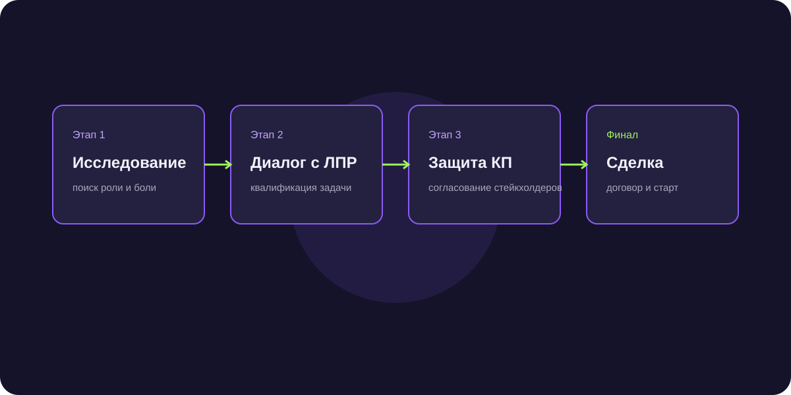

Особенности B2B продаж в Беларуси: регулирование цен, тендеры и каналы поиска партнеров
Белорусский рынок тесно интегрирован с российским, но имеет строгую специфику: жесткое госрегулирование торговых надбавок и доминирование государственных холдингов. Разбираем правила безопасных продаж.

Короткий ответ
B2B продажи в Республике Беларусь требуют учета Постановления Совета Министров №713 (жесткие ограничения предельных оптовых надбавок на широкий спектр товаров) и активного использования Белорусской универсальной товарной биржи (БУТБ). Продажи промышленным гигантам (МАЗ, БелАЗ, МТЗ) осуществляются строго через электронные тендерные процедуры на площадках goszakupki.by и icetrade.by.
3 ключевых канала продаж промышленной продукции в Беларуси
- Белорусская универсальная товарная биржа (БУТБ): обязательная площадка для торговли металлом, лесопродукцией, сельхозсырьем и промтоварами.
- Государственные закупки (Icetrade / Госзакупки): прозрачные тендерные торги с равным доступом для российских юридических лиц в рамках Союзного государства.
- Дилерская сеть частных дистрибьюторов: работа через местных торговых представителей, которые берут на себя логистику и работу с розницей.
Постановление №713: как не нарушить правила ценообразования
В Беларуси действует строгий контроль за обоснованностью отпускных цен. Поставщики обязаны составлять экономические расчеты (калькуляции себестоимости с расшифровкой затрат) и строго соблюдать предельные нормативы рентабельности, утвержденные МАРТ.
Финансовые расчеты в российских рублях
Благодаря интеграции национальных платежных систем (СПФС Банка России и системы БЕЛКАРТ) расчеты между контрагентами из РФ и РБ проходят моментально в российских рублях день в день без комиссий за конвертацию.
Частые вопросы по теме
Нужно ли открывать юрлицо в Беларуси для участия в тендерах?
Нет, российские компании имеют равные права с белорусскими и могут подавать заявки напрямую по своей российской ЭЦП, прошедшей процедуру признания.
Какие каналы коммуникации предпочитают белорусские закупщики?
Традиционные прямые телефонные звонки по стационарным номерам, официальные деловые письма с печатью и мессенджер Viber (крайне популярен наряду с Telegram).
Регулярные поставки на 18 млн рублей в адрес машиностроительных заводов РБ
Аккредитация на БУТБ и участие в биржевых торгах позволили компании стать ключевым поставщиком запчастей для тракторных производств.